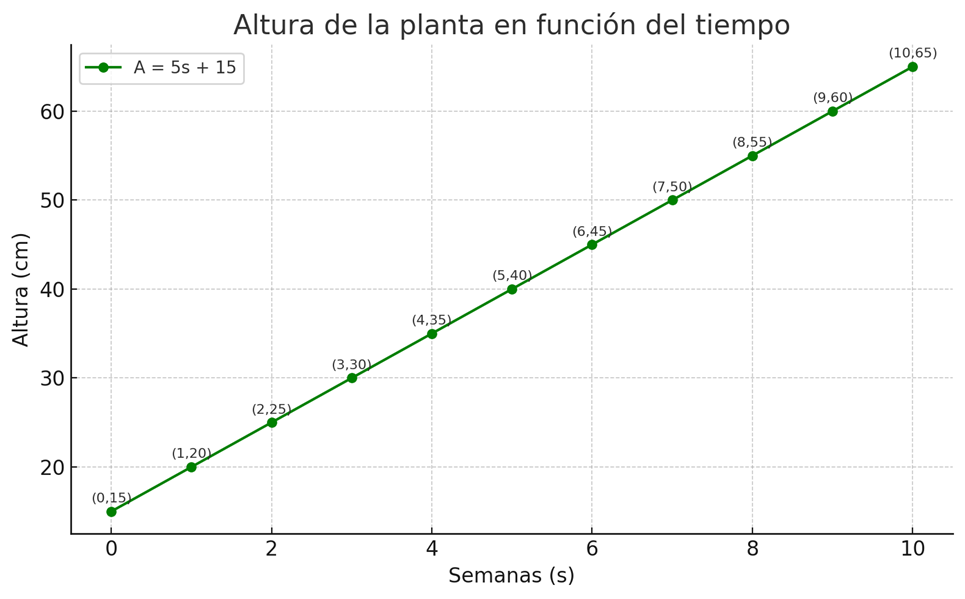
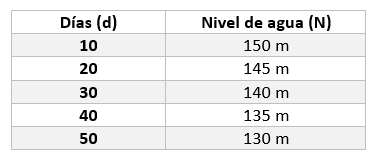

Contenidos teóricos
Función lineal y función afín
Función lineal:
Toda función de la forma y = mx, donde m es una constante diferente de cero, es una función lineal. Además, es función polinómica de primer grado cuya gráfica es una línea recta que pasa por el origen de coordenadas (0, 0), como se observa en la siguiente imagen:
Función afín
Toda función de la forma y = mx + b, donde m y b son constantes diferentes de cero, es una función afín. Además, es una función polinómica de primer grado, pero su gráfica es una línea recta que NO pasa por el origen
Función constante
Es aquella donde el valor de la función "la salida" no cambia, sin importar el valor de la "entrada". En otras palabras, siempre produce el mismo resultado, sin importar el valor que se le ingrese. Matemáticamente, se representa como f(x) = c.
Ejemplo 1. Un agricultor de Villa del Rosario vende sus cosechas de cilantro en el mercado. El precio es $500 por cada atado de cilantro. Representa de formma coherente usando las diferentes representaciones (verbal, algebraica, tabular y gráfica) .
Análisis y solución coherente:
Representación verbal: El ingreso es directamente proporcional a los atados vendidos, a $500 por atado. Esto significa que si no vende atados, su ingreso es cero, y por cada atado que vende, su ingreso aumenta en $500 cada uno.
Representación algebraica: Para representar esto, si I es el ingreso total y x es el número de atados de cilantro vendidos, la ecuación es: I = 500x
Representación tabular: Podemos ver cómo el ingreso cambia con el número de atados:
Representación gráfica:
Ejemplo 2. En una zona rural de Villa del Rosario, durante la temporada de lluvias, el nivel de una quebrada comienza en 0.2 metros y aumenta 0.1 metros cada hora debido a la precipitación constante.
Análisis y solución coherente:
Representación verbal: El nivel de la quebrada inicia en 0.2 metros y sube 0.1 metros cada hora. Esto describe un punto de partida y una tasa de crecimiento constante.
Representación algebraica: Si N es el nivel de la quebrada en metros y t es el tiempo en horas, la ecuación es: N = 0.1 t +0.2
Representacion tabular: Podemos ver cómo el nivel de la quebrada cambia con el tiempo de precipitaciones:
Representación Gráfica:
Ejemplo 3. Un hacendado en Villa del Rosario alquila caballerizas. Si tiene 120 caballerizas disponibles y cada mes se alquilan 5 caballerizas, ¿cuántas caballerizas quedan disponibles con el paso del tiempo?
Análisis y solución coherente:
Representación verbal: El número de caballerizas disponibles disminuye 5 unidades cada mes, partiendo de 120. Esto significa que hay un inventario inicial y una reducción constante.
Representación Algebraica: Si D es el número de caballerizas disponibles y m es el número de meses, la ecuación es: D = 120 - 5m.
Representación Tabular: Podemos ver cómo la disponibilidad de caballerizas cambia con el tiempo:
Representación Gráfica:
Ejemplo 4. En Cúcuta, el servicio de mototaxi tiene una tarifa base fija de $3.000, más $500 por cada kilómetro adicional recorrido. Queremos modelar el costo total del viaje.
Análisis y solución coherente:
Representación Verbal: El costo del mototaxi incluye una tarifa inicial de $3.000 y aumenta en $500 por cada kilómetro extra recorrido.
Representación Algebraica: Si C es el costo total del viaje y k son los kilómetros adicionales, la ecuación es: C = 500k + 3000.
Representación Tabular:
Representación Gráfica:
Ejemplo 5. Un tanque de agua en una vivienda rural en El Zulia tiene 800 litros de agua y, debido al uso constante, pierde 20 litros cada hora. Queremos saber la cantidad de agua restante en el tanque con el tiempo.
Análisis y solución coherente:
Representación Verbal: El tanque comienza con 800 litros de agua y su cantidad disminuye en 20 litros por cada hora de uso.
Representación Algebraica: Si Y es la cantidad de agua en litros y x es el tiempo en horas, la ecuación es: Y = 800 − 20x.
Representación Tabular:
Representación Gráfica:
Ejemplo 6. Una población pequeña en una vereda cerca al El Escobal (Cúcuta) se estimó en 1.500 habitantes enel 2020 y ha estado creciendo a una tasa constante de 25 habitantes por año. Queremos proyectar el crecimiento de la población.
Análisis y solución coherente:
Representación Verbal: La vereda tuvo una población inicial de 1.500 habitantes en el año 0 (2020) y aumenta en 25 personas cada año.
Representación Algebraica: Si Y es la población y x son los años transcurridos desde 2020, la ecuación es: Y = 25x + 1500.
Representación Tabular:
Representación Gráfica:
Ejemplo 7. Una pequeña fábrica artesanal de ladrillos en San Faustino produce 300 ladrillos por día de manera constante. Queremos representar la producción total de ladrillos.
Análisis y solución coherente:
Representación Verbal: La fábrica produce ladrillos a una tasa constante de 300 unidades por día. No hay producción si no hay días de trabajo.
Representación Algebraica: Si L es el número total de ladrillos producidos y d es el número de días, la ecuación es: L = 300d
Representación Tabular:
Representación Gráfica:
Ejemplo 8. En el mercado de La Parada, el precio del café orgánico es de $18.000 por cada kilogramo. Queremos modelar el costo total de la compra.
Análisis y solución coherente:
Representación Verbal: El costo total del café orgánico es directamente proporcional a la cantidad de kilogramos comprados, a razón de $18.000 por kilogramo.
Representación Algebraica: Si C es el costo total en pesos y k son los kilogramos de café, la ecuación es: C = 18.000k.
Representación Tabular:
Representación Gráfica:
Ejemplo 9. En un día de diciembre en Cúcuta, la temperatura comenzó en 30°C y disminuyó 2°C cada hora durante la noche. Queremos modelar la temperatura a lo largo del tiempo.
Análisis y solución coherente:
Representación Verbal: La temperatura inicial fue de 30°C, y bajó a una tasa constante de 2°C por hora.
Representación Algebraica: Si T es la temperatura en °C y h es el número de horas transcurridas desde el inicio del descenso, la ecuación es: T = 30 − 2h.
Representación Tabular:
Representación Gráfica:
Ejemplo 10. Un puesto de arepas en el centro de Cúcuta vende cada arepa a $1.500. Queremos modelar el ingreso total por la venta de arepas.
Análisis y solución coherente:
Representación Verbal: El ingreso total por la venta de arepas es proporcional al número de arepas vendidas, a razón de $1.500 por arepa.
Representación Algebraica: Si I es el ingreso total y a es el número de arepas vendidas, la ecuación es: I = 1500a.
Representación Tabular:
Representación Gráfica:
Ejemplo 11. Un vehículo en una ruta larga desde Cúcuta tiene 40 litros de gasolina en su tanque. Consume combustible a una tasa constante de 5 litros por cada 100 kilómetros recorridos.
Análisis y solución coherente:
Representación Verbal: El tanque de gasolina comienza con 40 litros. La cantidad de gasolina disminuye a una tasa de 5 litros por cada 100 kilómetros recorridos.
Representación Algebraica: La tasa de consumo es 5 litros/100 km = 0.05 litros/km. Si G es la gasolina restante en litros y d son los kilómetros recorridos, la ecuación es: G = 40 − 0.05d
Representación Tabular:
Representación Gráfica:
Ejemplo 12. En un cultivo de plátano en el corregimiento de San Faustino, una planta joven mide 15 cm de altura y se observa que crece 2 cm cada día en condiciones óptimas.
Análisis y solución coherente:
Representación Verbal: La planta de plátano tiene una altura inicial de 15 cm y su altura aumenta 2 cm por día.
Representación Algebraica: Si A es la altura de la planta en cm y d es el número de días, la ecuación es: A = 2d + 15
Representación Tabular:
Representación Gráfica:
Ejemplo 13. Un pozo de agua en una finca cercana a Cúcuta tenía un nivel inicial de 10 metros. Durante una sequía prolongada, su nivel ha estado disminuyendo a una tasa de 0.5 metros por semana.
Análisis y solución coherente:
Representación Verbal: El pozo comenzó con un nivel de 10 metros, y este nivel disminuye en 0.5 metros cada semana debido a la sequía.
Representación Algebraica: Si N es el nivel del pozo en metros y s es el número de semanas, la ecuación es: N = 10 − 0.5s
Representación Tabular:
Representación Gráfica:
Ejemplo 14. Un agricultor en El Zulia está monitoreando el crecimiento de sus plantas de yuca. La siguiente tabla muestra la altura promedio de las plantas en centímetros a lo largo de varias semanas:
Análisis y solución coherente:
Paso 1: Calcular la Pendiente (m) Para hallar la pendiente, tomamos dos puntos de la tabla, por ejemplo, ( s1 , A1 ) = ( 2 , 25 ) y ( s2 , A2 ) = ( 4 , 35 ).
Paso 2: Calcular la Ordenada al Origen (b) Usamos la fórmula y = mx + b. Sustituimos un punto como por ejemplo: (2, 25) y la pendiente (m = 5):
25 = 5(2)+b
25 = 10+b
b = 15
Representación Verbal: La altura promedio de las plantas de yuca comienza en 15 cm y aumenta 5 cm cada semana.
Representación Algebraica: Si A es la altura en cm y s son las semanas, la ecuación es: A = 5s + 15. La pendiente (m) es 5.
Representación Tabular: (Ya proporcionada en la situación, pero se incluye para completar el ciclo de coherencia).
Representación Gráfica:

Ejemplo 15. Un camión de carga que transporta mercancía desde Cúcuta hacia Puerto Santander registra el combustible consumido en función de los kilómetros recorridos.
Análisis y solución coherente:
Paso 1: Calcular la Pendiente (m) Tomamos dos puntos de la tabla, por ejemplo, ( k1 , C1 )=( 50 , 8 ) y ( k2 , C2) = ( 100,16 ).
Paso 2: Calcular la Ordenada al Origen (b) Usamos la fórmula y =mx + b. Sustituimos un punto (ej. (50, 8)) y la pendiente ( m = 0.16):
8 = 0.16 (50) + b
8 = 8 + b
b = 0
Representación Verbal: El consumo de combustible del camión es proporcional a los kilómetros recorridos, con un consumo de 0.16 litros por cada kilómetro.
Representación Algebraica: Si C es el combustible consumido en litros y k son los kilómetros recorridos, la ecuación es: C = 0.16k . La pendiente (m) es 0.16.
Representación Tabular: (Ya proporcionada).
Representación Gráfica:
Ejemplo 16. Durante una época de pocas lluvias, se monitorea el nivel de agua en una pequeña represa en San Faustino. La tabla muestra el nivel de agua en metros a lo largo de los días:
Análisis y solución coherente:
Paso 1: Calcular la Pendiente (m) Tomamos dos puntos de la tabla, por ejemplo, ( d1 , N1 ) = ( 10 , 150 ) y ( d2 , N2 ) = ( 20 , 145 ).
Paso 2: Calcular la Ordenada al Origen (b) Usamos la fórmula y = mx + b. Sustituimos un punto (ej. ( 10 , 150 )) y la pendiente (m=−0.5):
150 = −0.5 (10) + b
150 = −5 + b
b = 155
Representación Verbal: El nivel de agua en la represa disminuye 0.5 metros cada día. Si se proyecta hacia atrás, el nivel inicial hipotético al día 0 sería de 155 metros.
Representación Algebraica: Si N es el nivel de agua en metros y d son los días, la ecuación es: N = -0.5d + 155. La pendiente (m) es -0.5.
Representación Tabular: (Ya proporcionada)

Representación Gráfica: